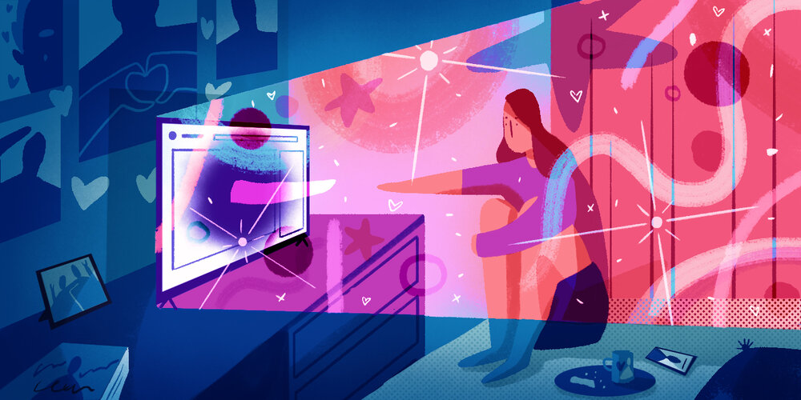

<!doctype html>
<html lang="en">
    <meta charset="utf-8">
    <meta name="viewport" content="width=device-width", initial-scale=1>

    <meta name="description" content="A description of the article, most likely used in snippets">
    <meta name="author" content="Andrew Walters">
    <!-- Add in other rich data -->

    <!-- Icons and fonts -->
    <script src="https://kit.fontawesome.com/ab4f2900b6.js" crossorigin="anonymous"></script>  
    <link rel="preconnect" href="https://fonts.googleapis.com">
    <link rel="preconnect" href="https://fonts.gstatic.com" crossorigin>
    <link href="https://fonts.googleapis.com/css2?family=Roboto:wght@300&family=Source+Sans+Pro&display=swap" rel="stylesheet">
    
    <!-- CSS -->
    <link rel="stylesheet" href="easy-read.css" /> 
</html>
<body>
    <div id="page"> <!-- Why put div here? To give width to page? -->
        <header id="header-main">
            <div id=header-brand>
                <a id="brand-logo">
                    <i class="fas fa-book-open"></i> 
                </a>
                <h1 id="brand-name">
                    <a>Easy Read</a>
                </h1>
            </div>
            <nav id="header-nav">
                <i id="header-nav-icon" class="fas fa-bars"></i>
                <ul id="header-nav-list">    
                    <li><a class="nav-link" href="">About</a></li>
                    <li><a class="nav-link" href="">Categories</a></li>
                    <li><a class="nav-link" href="">Contact</a></li>
                </ul> 
            </nav>   
        </header>
        <main>
            <article>
                <!-- Image needs proper labelling and referencing  -->
                
                <div class="article-text">    
                    <div class="article-header">
                        <div class="article-categories">
                            <a>
                                <span class="label-size label-colour">Technology</span>
                                <span class="label-size label-colour">Culture</span>
                                <span class="label-size label-colour">Society</span>
                            </a>
                        </div>
                        <h1 class="article-title">
                            Internet Friends or Real-life Friends: the Difference Isn’t Clear
                        </h1>
                        <div class="article-meta">
                            <time id="article-date">July 2021</time>
                            <author id="article-author">Andrew Walters</author>
                            <span id="original-artile"> Source: <a href="https://every.to/cybernaut/the-blurred-lines-of-parasocial-relationships">The Blurred Lines of Parasocial Relationships</a></span>
                        </div>
                        <div class="article-control-panel label-colour">
                            <ul class="article-controls label-colour">
                                <li id="summary-level" class="article-control-option">
                                    <a>Level</a>
                                    <ul class="option-dropdown label-colour">
                                        <li><a id="select-level-1">Intermediate</a></li>
                                        <li><a id="select-level-2">Beginner</a></li>
                                    </ul>
                                </li>
                                <li id="font-size" class="article-control-option">
                                    <a>Font Size</a>
                                    <ul class="option-dropdown label-colour">
                                        <li><a id="font-size-small">Small</a></li>
                                        <li><a id="font-size-medium">Medium</a></li>
                                        <li><a id="font-size-large">Large</a></li>
                                    </ul>
                                </li>
                            </ul>
                            <a id="print-article" class="article-control-option">Print</a>
                        </div>
                    </div>
                    <div class="article-body">
                        <div class="summary-paragraph">
                            <a class="prev increase-summary-level">&#10094;</a>
                            <p class="summary level-2">Over 100,000 people watched Hila Klein and Ethan Klein find out that they were going to have a baby. That is because Hila and Ethan recorded themselves on video and showed it on the Internet at the same time. Many people were very happy.</p>
                            <p class="summary level-1">More than 100,000 people watched as Hila and Ethan Klein learned that Hila was pregnant with their child, in an event streamed live on the Internet. People commented that Hila was a 'queen' and that they were 'crying of happiness'.</p>
                            <a class="next decrease-summary-level">&#10095;</a>
                        </div>
                        <div class="summary-paragraph">
                            <a class="prev increase-summary-level">&#10094;</a>
                            <p class="summary level-2">Hila and Ethan are very popular. They make videos on YouTube. In some of their videos, they do funny things. In some of their videos, they watch other people’s videos. These days, they make videos where they talk to other people about interesting things. Millions of people watch the videos that Hila and Ethan make, and some people watch them a lot. They watch them so much that they feel like they know them. They feel like friends.</p>
                            <p class="summary level-1">Over the past decade, Hila and Ethan Klein have become Internet celebrities for their popular YouTube channel. They started off making videos of themselves doing funny things or reacting to other people’s videos. Then, they started making videos where they talked to other people about subjects that are important and popular. As a result, they gained millions of fans, some of whom feel very close to the couple, almost as though they know Hila and Ethan personally.</p>
                            <a class="next decrease-summary-level">&#10095;</a>
                        </div>
                        <div class="summary-paragraph">
                            <a class="prev increase-summary-level">&#10094;</a>
                            <p class="summary level-2">Hila and Ethan talk a lot about things that happen to them. They have a baby and want to have another baby. However, it isn’t easy for them. They need a doctor to help them. In Hila and Ethan’s videos, they talk about wanting another baby. They talk about going to the doctor and what the doctors say. When they got the news that they were going to have a baby, all their fans got the news at the same time as they did. This is a bit strange because people normally only tell their best friends and family when they first find out that they are going to have a baby.</p>
                            <p class="summary level-1">Hila and Ethan share many parts of their personal lives with their online audience. They share their struggles to have a second child, and explain the medical steps they take to become pregnant. Their videos include fertility information and advice they get from doctors. Their fans are treated like close friends and family when they are included in Hila and Ethan’s surprise news that she is pregnant, all while streaming live on their channel. This is unusual in a culture where couples normally wait weeks before making a public pregnancy announcement.</p>
                            <a class="next decrease-summary-level">&#10095;</a>
                        </div>
                        <h2>
                            A New Kind of Friend
                        </h2>
                        <div class="summary-paragraph">
                            <a class="prev increase-summary-level">&#10094;</a>
                            <p class="summary level-2">People like Hila and Ethan are called Internet influencers. They are so popular on the Internet that they can change the way that people think and feel. For Internet influencers, sharing personal information is normal. They tell their fans many kinds of personal stories about their lives. Sometimes, these stories are so personal that some fans have not heard them from their real-life friends. Fans might repeat these stories and say that a friend told them.</p>
                            <p class="summary level-1">Sharing personal information about their lives is normal for Internet influencers like Hila and Ethan. Internet influencers often speak directly into the camera, as though they are looking directly into the eyes of their audience. They discuss changes in their relationships. They talk about birth, illness and death, sometimes for hours. These are conversations that the audience themselves often have not had with their real-life friends. Fans may retell these stories as though they heard them from a personal friend.</p>
                            <a class="next decrease-summary-level">&#10095;</a>
                        </div>
                        <div class="summary-paragraph">
                            <a class="prev increase-summary-level">&#10094;</a>
                            <p class="summary level-2">In 1956, two scientists wrote an essay about fans and celebrities. They said that it was ‘para-social’, meaning that it was not normal for society. They thought that someone who worked on TV could not be friends with all the people who watched. They thought this because the fans and celebrities could not talk together. Also, celebrities could talk about anything they wanted but the people who were watching could only watch.</p>
                            <p class="summary level-1">In 1956, Donald Horton and Richard Wohl wrote a paper about this kind of relationship between celebrities and their fans. They described it as being ‘para-social’. They thought that this kind of relationship was beyond what was normal for society because celebrities and audiences could not communicate in the socially accepted way. Furthermore, celebrities were in complete control over what was discussed. For the large majority of the time, the audience could do nothing but listen.</p>
                            <a class="next decrease-summary-level">&#10095;</a>
                        </div>
                        <h2>
                            The Very Best of Friends
                        </h2>
                        <div class="summary-paragraph">
                            <a class="prev increase-summary-level">&#10094;</a>
                            <p class="summary level-2">The two scientists said that these kinds of celebrities have special skills. These skills help them to make so many friends like this. For example, their shows are always at the same time each day. This means that their fans always know when to watch. They also tell fans parts of their personal lives so that they feel like close friends. However, even if fans feel like they are close friends, the celebrities probably don’t know who they are.</p>
                            <p class="summary level-1">In their paper, Horton and Wohl described these kinds of celebrities as having special skills. These skills allow them to have so many of these para-social relationships at once. Performers present their shows at the same time each day, and often about their daily lives. As a result, fans feel like they know the performer personally. However, these celebrities probably didn’t know their audience at all.</p>
                            <a class="next decrease-summary-level">&#10095;</a>
                        </div>
                        <div class="summary-paragraph">
                            <a class="prev increase-summary-level">&#10094;</a>
                            <p class="summary level-2">Sometimes, a fan might think that they are the best fan. They might think that they know more about the celebrity than all the other fans. The scientists’ paper is interesting because it sounds like many people today, but they said this about celebrities over 60 years ago. Back then, people listened to the radio or watched television and movies. Today, people listen to and watch celebrities on the Internet.</p>
                            <p class="summary level-1">Over time, some fans can start to believe that they are the most devoted of all fans. They often see themselves as caring more for their idol and understanding them deeper than any other fan. The paper written by Horton and Wohl is interesting because it seems more true today than when it was written. It was written over sixty years ago about radio, television, and movie celebrities but it sounds as though it was written about today’s Internet influencers like Hila and Ethan.</p>
                            <a class="next decrease-summary-level">&#10095;</a>
                        </div>
                        <h2>
                            A More Recent Reality
                        </h2>
                        <div class="summary-paragraph">
                            <a class="prev increase-summary-level">&#10094;</a>
                            <p class="summary level-2">Around the year 2000, there were no Internet celebrities. However, people liked to watch a new type of TV show. In one of these shows, called The Real World, a group of young adults lived together in a house. They were sometimes being filmed when they didn’t know so that people could watch their lives when they were not acting. People really liked watching these kinds of shows because they often spoke to the camera about what they were doing and how they felt.</p>
                            <p class="summary level-1">In the late 1990’s and early 2000’s, before Internet influencers, people increasingly watched reality television. In one reality show called The Real World, a group of young adults lived together in a house. The participants were sometimes filmed without their knowledge so that the audience could see their ‘real’ lives. Fans particularly enjoyed listening to the housemates tell secrets during special interviews where they spoke straight into the camera.</p>
                            <a class="next decrease-summary-level">&#10095;</a>
                        </div>
                        <div class="summary-paragraph">
                            <a class="prev increase-summary-level">&#10094;</a>
                            <p class="summary level-2">At this time, other shows became popular, too. In Survivor, people played important games against each other and then had to live together. They then told stories about their lives to anyone watching the show. In Big Brother, people were filmed living together, and anyone could watch the show at any time. This means that they were always being watched all the time.</p>
                            <p class="summary level-1">Around this time, other popular shows included Survivor and Big Brother. In Survivor, players had to compete for important prizes and then live together. The players would then tell the audience secrets about how they felt about each other. In Big Brother, people lived together under the constant watch of the cameras in their house. Viewers could watch through these cameras at any time of the day, any day of the week, even between episodes.</p>
                            <a class="next decrease-summary-level">&#10095;</a>
                        </div>
                        <h2>
                            No More Games
                        </h2>
                        <div class="summary-paragraph">
                            <a class="prev increase-summary-level">&#10094;</a>
                            <p class="summary level-2">After some time, these shows stopped playing games. Instead, they showed more about the lives of the people in the shows. In 2003, a show called The Simple Life showed the lives of two rich girls who didn’t know how to do normal jobs. People liked it so much that they made many other shows like it. Some of these shows were: Keeping up With the Kardashians, The Real Housewives of Beverly Hills, and Jersey Shore.</p>
                            <p class="summary level-1">After a while, reality shows stopped featuring competitions in order to focus on the lives of the people in the shows. In 2003, The Simple Life showed the lives of two wealthy girls who were unable, or unwilling, to understand and relate to normal working people. Its popularity caused many other shows to copy its style. These included names such as Keeping up With the Kardashians, The Real Housewives of Beverly Hills, and Jersey Shore.</p>
                            <a class="next decrease-summary-level">&#10095;</a>
                        </div>
                        <div class="summary-paragraph">
                            <a class="prev increase-summary-level">&#10094;</a>
                            <p class="summary level-2">People watched these TV shows so much that they started wanting more. They wanted more stories about the lives of the people in the shows. They wanted to find out who they were dating. They wanted to know more about their feelings. They started to feel like real-life friends more and more, even though they were not.</p>
                            <p class="summary level-1">The rise of these reality television shows changed the things that viewers demanded from celebrities. Viewers wanted more personal stories. They wanted to see more of their idols’ lives. They wanted to find out who they were dating, and know more about their thoughts and feelings. As a result, more people had these para-social relationships, and the relationships were getting stronger.</p>
                            <a class="next decrease-summary-level">&#10095;</a>
                        </div>
                        <h2>
                            Anything You Can Do I Can Do Better
                        </h2>
                        <div class="summary-paragraph">
                            <a class="prev increase-summary-level">&#10094;</a>
                            <p class="summary level-2">People on the internet have been making videos that are like the TV shows that were popular in the past. For example, MTV Cribs showed celebrities walking around and talking about their houses. Now, people make videos on YouTube where they show everyone around their homes. It feels normal to see inside people’s rooms. People used to watch their favourite celebrities fight with each other on TV shows. Now they watch their arguments over the Internet. Instead of cheering for them to win a game in a TV show, they cheer for their videos to become successful.</p>
                            <p class="summary level-1">The success of reality television shows made it easier for the success of Internet influencers. Popular internet videos today are made to be similar to popular television shows in the past. In MTV Cribs, celebrities were filmed walking around their homes. Today, influencers do the same thing for YouTube. Some argue over the Internet in the same way that celebrities did on reality television. Today, people love influencers on the Internet just like they used to love celebrities on TV.</p>
                            <a class="next decrease-summary-level">&#10095;</a>
                        </div>
                        <div class="summary-paragraph">
                            <a class="prev increase-summary-level">&#10094;</a>
                            <p class="summary level-2">In the same year as many of these popular TV shows, Eminem, made a song called 'Stan'. In the song, a fan was writing a letter to his favourite celebrity. However, when he didn’t get a reply, he got angry. At the end of the song, he killed himself and his girlfriend. The popular rapper was talking about the problem of fans wanting to know too much about celebrities, and wanting too much control over their lives. People started to say that these kinds of fans were 'stanning'. So many people use this term that it has been put into the Oxford Dictionary. </p>
                            <p class="summary level-1">In the same year as Survivor and Big Brother, Eminem wrote a rap song called 'Stan'. It was about an obsessed fan who became more and more troubled when his idol hadn’t answered any of his letters. Eventually, he ended up killing himself and his girlfriend. Through the song, Eminem was bringing attention to the dangers of fans wanting unlimited access to the lives of celebrities. This would later become known as 'stanning', a term so popular that it has been added to the Oxford Dictionary.</p>
                            <a class="next decrease-summary-level">&#10095;</a>
                        </div>
                        <h2>
                            Times Are Changing
                        </h2>
                        <div class="summary-paragraph">
                            <a class="prev increase-summary-level">&#10094;</a>
                            <p class="summary level-2">These days, things are different in one important way. Before, people could not talk to their favourite celebrities. They could only watch them on TV or hear them on the radio. That was why scientists said that this kind of friendship was not normal for society. Today, people can talk to each other using the Internet. That means that people can chat with their favourite celebrities. They can chat for a short time or they can chat for a long time. They can be friends.</p>
                            <p class="summary level-1">Over time, para-social relationships have changed in one important way. In the past, people were only able to watch or listen to their idols, and there was little chance for direct communication. Now, fans can message their idols, receive replies, and have actual conversations. These conversations can happen once or they can continue for a long time. Their relationship has a chance to become a ‘real’ one.</p>
                            <a class="next decrease-summary-level">&#10095;</a>
                        </div>
                        <div class="summary-paragraph">
                            <a class="prev increase-summary-level">&#10094;</a>
                            <p class="summary level-2">In 2017, some more scientists looked at this new kind of friendship on the Internet. They thought that it was more normal for society. They thought that each friend was getting something good by being friends together in this way. They said that celebrities in the past didn’t give their fans much chance to chat but now they chat on the Internet all the time. They tell lots of personal stories and their fans like hearing them. They listen all the time for new stories. The stories help them feel like they know the celebrity very well. The Internet brings people together and makes them feel like real friends. This is true for all kinds of celebrities today. However, it is most true for people like Hila and Ethan who became famous on the Internet rather than in movies or on TV.</p>
                            <p class="summary level-1">In 2017, researchers at a Singapore university published a paper about this new kind of relationship that used social media. They described it as being more beneficial for each side than para-social. They argued that celebrities in the past controlled their exposure to fans as it helped them control their image. Now, celebrities share all kinds of personal information all the time. Fans reward them by watching all their content whenever it is released. It helps them to feel like they know them personally. The Internet has brought people together and helped them to feel like real friends. The paper was written to describe TV celebrities. However, it can be more clearly seen in today’s Internet influencers like Hila and Ethan.</p>
                            <a class="next decrease-summary-level">&#10095;</a>
                        </div>
                        <h2>
                            Like or Die
                        </h2>
                        <div class="summary-paragraph">
                            <a class="prev increase-summary-level">&#10094;</a>
                            <p class="summary level-2">It is important for celebrities to have many people who watch them. However, it is more important that they have lots of fans. If a celebrity has many people watching their videos but does not have many fans, they will find it hard to make money. For example, many people watch celebrities that they don’t like. They watch them but they don’t give them money. This kind of celebrity might still make some money from YouTube showing products in their videos but this money might stop one day. People like Hila and Ethan would not have to worry if this happened because they have lots of fans who support them.</p>
                            <p class="summary level-1">For influencers, it is vital that they have lots of people watching them. However, if the people watching are not fans like those described in the researchers’ paper, they will struggle to make money. That’s because it is common for people to watch celebrities that they hate and not give them any financial support. A hated celebrity might still earn money from YouTube selling advertisements on their channel. However, this money can suddenly stop at any time. Influencers like Hila and Ethan are protected from events like this because they can rely on the support of their fans.</p>
                            <a class="next decrease-summary-level">&#10095;</a>
                        </div>
                        <div class="summary-paragraph">
                            <a class="prev increase-summary-level">&#10094;</a>
                            <p class="summary level-2">There are some big companies on the Internet like YouTube, Twitch, TikTok, and OnlyFans. They make products that use Internet influencers and their fans to make money. They want to keep people making friends on the Internet like this because it means that they make more money. People are paying to hear their favourite influencers tell stories about their lives because it makes them feel close. It makes them feel like they have friends. These big companies get money each time this happens. There is so much money that it has made a whole new type of market. People are paying for something that feels like friendship but isn’t. If they are not careful, it could be dangerous.</p>
                            <p class="summary level-1">Internet platforms like YouTube, Twitch, TikTok, and OnlyFans make money from influencers and their fans. They build their websites to maximise the number of people who develop these para-social relationships because it means that they make more money. Fans provide their idols with financial and emotional support, and in return they get a feeling of closeness. With each new relationship, these companies make more money. An entire economy is being made off people selling intimacy. If fans are not careful, they might find that the friendship of an influencer costs more than they are prepared to lose.</p>
                            <a class="next decrease-summary-level">&#10095;</a>
                        </div>               
                </div>
            </article>
        </main>
        <footer>

        </footer>
    </div>    
</body>
<script src="easy-read.js"></script>
